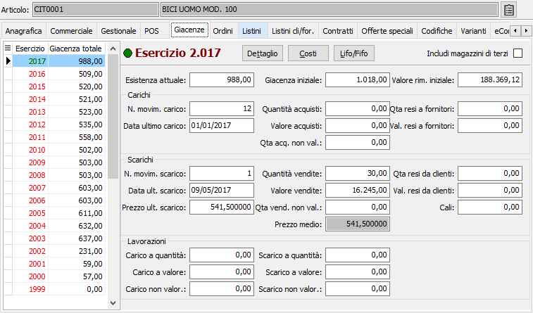
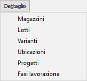
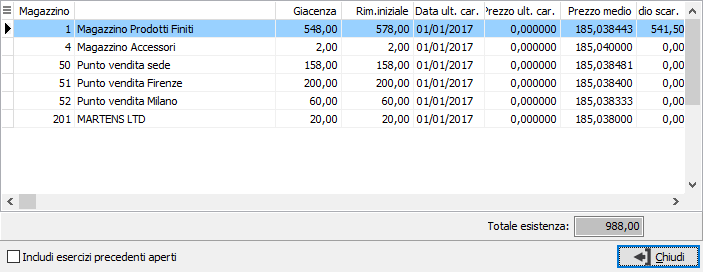
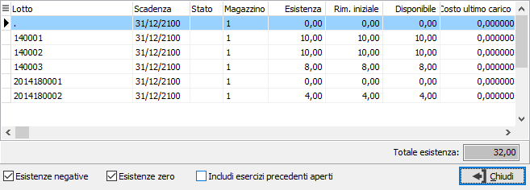
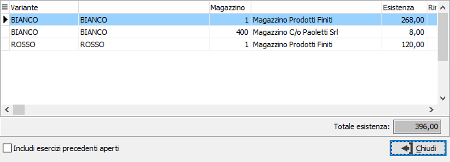
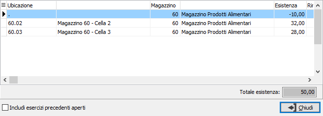
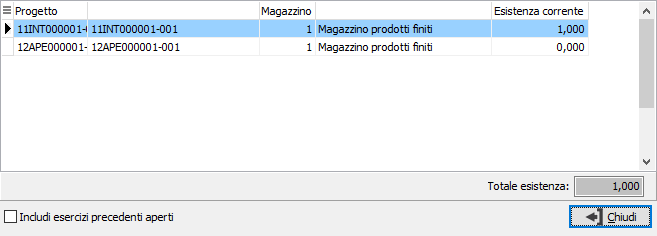
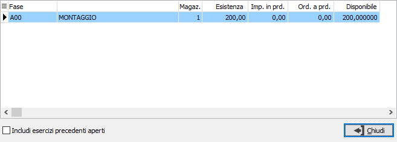

Giacenze
La sezione presenta, per il prodotto in esame, i valori di giacenza attuale (relativa all'esercizio), esistenza iniziale, valore delle rimanenze iniziali ed i valori di tutti i progressivi suddivisi nei tre gruppi carichi, scarichi e lavorazioni.
Accedendo al programma, viene visualizzata la situazione del prodotto per l’esercizio in corso; nella griglia di sinistra sono elencati gli esercizi esistenti, in rosso quelli chiusi ed in verde quelli aperti. Il pulsante Dettaglio consente di visualizzare i dati di sintesi dei vari dettagli gestiti in relazione alla tipologia di installazione: nel caso in cui vengano gestiti più magazzini, nel caso in cui il prodotto sia gestito a lotti oppure a varianti oppure a ubicazioni, nel caso sia attiva la gestione progetti oppure la gestione del conto lavoro.
Per il dettaglio magazzini i valori visualizzati sono relativi ai magazzini di proprietà; spuntando la casella 'Includi magazzini di terzi' saranno considerati nel calcolo anche i valori derivanti da movimenti relativi a magazzini di terzi.
Il pulsante Costi visualizza una finestra, che in base alla configurazione del magazzino elenca i valori derivanti dalle valorizzazioni con specifica dei giorni per mese se attive le valorizzazioni giornaliere; se non sono gestite le valorizzazioni vengono visualizzati i valori alla data di sistema del costo medio di carico e del costo ultimo carico, modificando la data e premendo il pulsante Calcola saranno ricalcolati alla data inserita.
Se attivi i moduli relativi a LIFO o a FIFO dall'apposito pulsante è possibile visualizzare i valori degli esercizi presenti per il prodotto visualizzato.
I valori presentati nei vari campi non sono modificabili da parte dell’utente, in quanto generati dai movimenti di magazzino esistenti. Il significato di ciascun campo risulta evidente grazie all’etichetta che lo precede.


Agendo sul bottone Dettaglio compare un menù che in relazione alla configurazione impostata consente di esaminare i vari dettagli presenti.Agendo sulla voce Magazzini viene presentata la griglia di valori per i magazzini attivi:

Agendo sulla voce Lotti viene presentata la griglia di valori dei progressivi relativi ai lotti del prodotto:

Agendo sulla voce Varianti viene presentata la griglia di valori dei progressivi relativi alle varianti del prodotto:

Agendo sulla voce Ubicazioni viene presentata la griglia di valori dei progressivi relativi alle ubicazioni del prodotto:

Agendo sulla voce Progetti viene presentata la griglia di valori dei progressivi relativi ai progetti del prodotto:

Agendo sulla voce Fasi lavorazione viene presentata la griglia di valori dei progressivi relativi alle fasi di lavorazione del prodotto:
